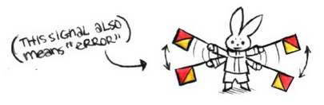
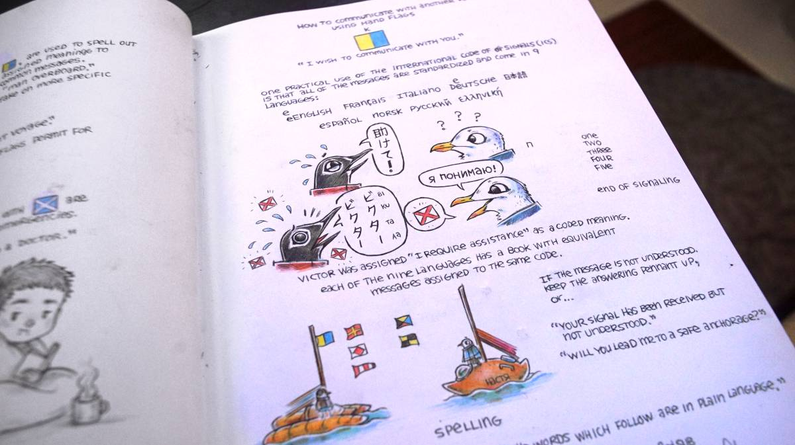
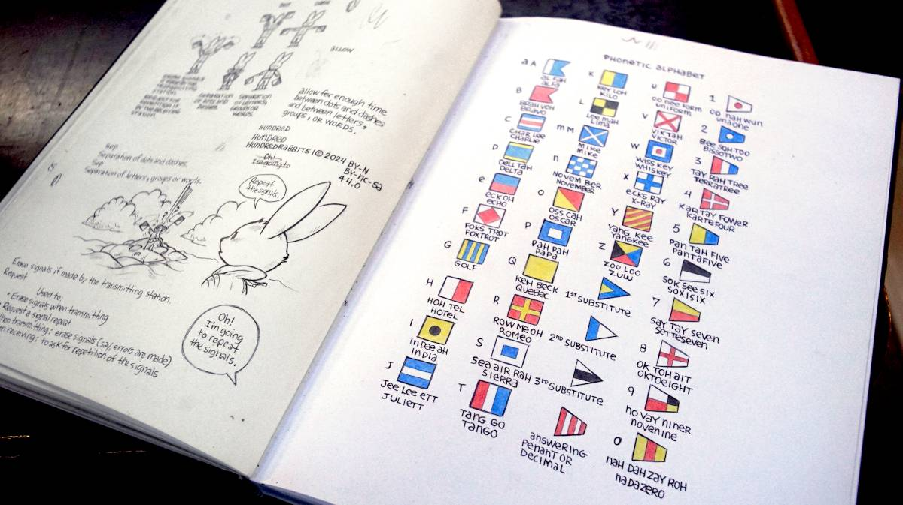

rabbit waves

Rabbit Waves serves as a vessel to expand in a playful way using hand drawn illustrations, on some of our favourite subjects, like communication, hand tools, food preservation, and seafaring.
Enter Rabbit WavesThe idea came after discussing the disappearance of certain traditional seasteading skills and maritime communication knowledge that we believe are valuable when electronics misbehave, but that are also just generally fun to learn and use.
The world of the micro-site will grow as we think of new ideas to expand it, if you have suggestions for topics that you would like for us to explore through the characters of Rabbit Waves, get in touch!
All of the Rabbit Waves are is done by hand, with ink and coloring pencils. The art is scanned and processed digitally.
 